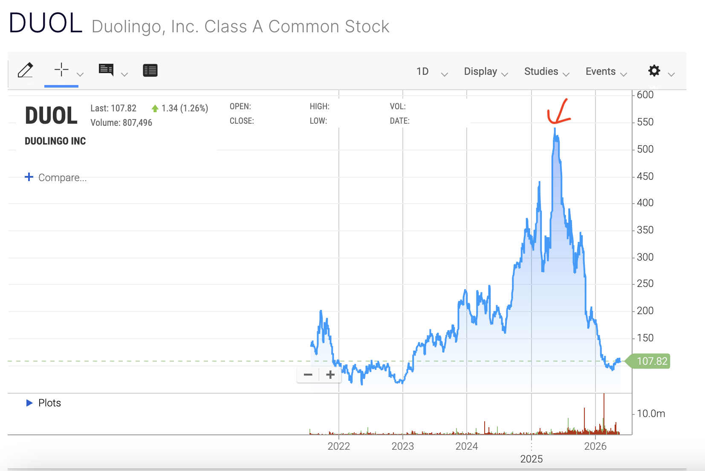
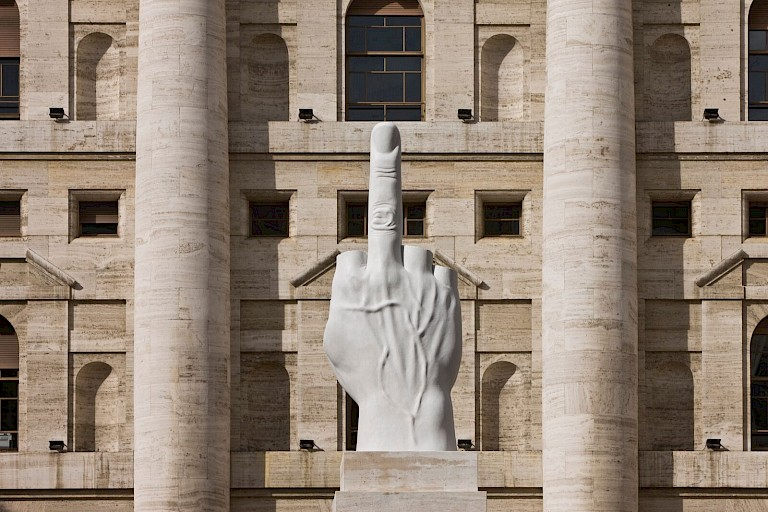

Dans le cadre de l'échange professionnel proposé par JIN avec l'agence MyPR à Milan, je vous prie de trouver ci-dessous ma candidature.
Comedian est une œuvre qui a suscité énormément de débats sur la valeur, la propriété et le rôle de l'art dans la société.
Personnellement, je ne suis pas particulièrement aficionada de la banane, ni de l'art conceptuel, mais j'ai trouvé que cette œuvre pouvait constituer un point d'entrée engageant sur la spéculation et le « battage ».

Le saviez-vous ? Chaque année, l'Union européenne propose aux citoyens européens âgés de 18 ans de participer à un concours pour remporter un Pass Interrail.
Voilà par quel biais j'ai découvert, tout juste majeure, la ville de Milan pour la première fois.
Près de huit ans plus tard, mon employeur propose justement de réaliser un échange professionnel à Milan.
Mais cette fois-ci, j'ai une vision bien plus claire de ce que je souhaite y faire : m'immerger dans la culture d'une autre entreprise, découvrir d'autres façons de faire et de vivre.

C'est dans cet esprit que j'aborderai cet échange à Milan : avec curiosité, ouverture et regard critique.
Merci d'avoir pris le temps de lire ma candidature.